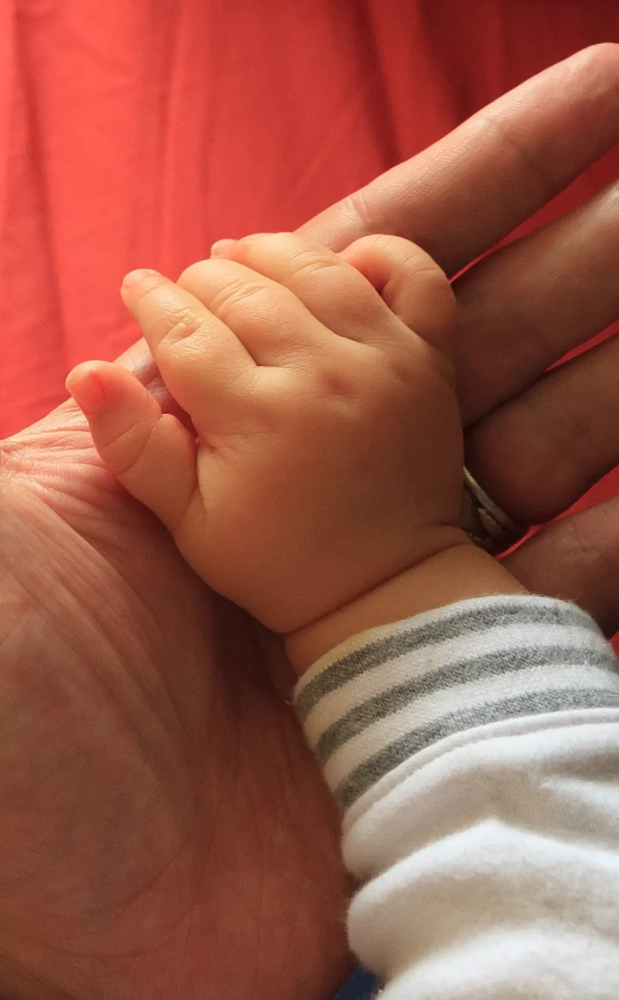

Who We Are: Not a choice. Not an illness. Just who we are.

This is a place for understanding, healing and being seen. The science is settled: orientation is not a choice, not an illness, and cannot be fixed. What is left is how we treat each other. Let us live.
Sections
Explore the site
Understand
Stories
Care


The record
What is settled
0American psychiatrists removed homosexuality from their list of mental disorders
0The World Health Organization removed it from its classification of diseases
0India's Supreme Court decriminalised same-sex love
0people in the largest genetic study of sexual orientation ever done
If today is heavy
You don't have to carry it alone. Tele-MANAS 14416Free, confidential, 24/7, in 20+ languages